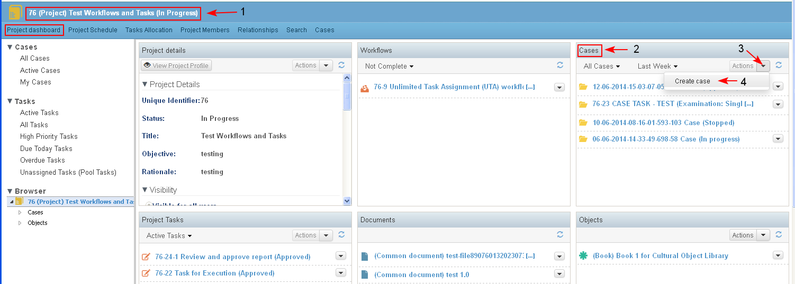
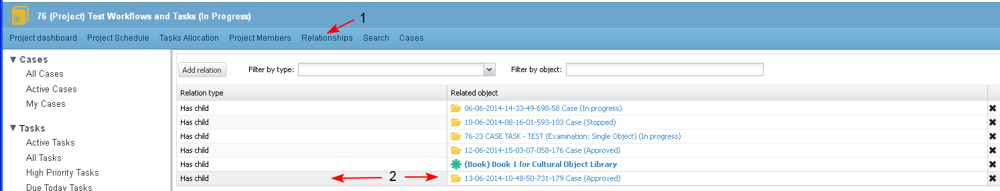

The user is able to create new cases in a project.
- To create a new case in a project, the user selects button "Create Case" from:
- Project Dashboard/ Cases dashlet / Actions/ Create Case (1-2-3-4)
- Project Dashboard/ Navigation Menu Cases/ New Case

- The user selects from the drop down menu the type of case (1).
- The user enters the necessary data for the selected type of case and clicks the button "Create Case" (2-3-4).

- The system opens the case details page of the newly created case (1). The user may enter comments in the section (2), the available actions on the case are displayed in the drop down menu (3-4).
- The user selects tab "Project dashboard" (5).

- In the "Project dashboard" the created case appears in the Cases dashlet with the available actions on it (1-2-3-4).
- The user selects tab "Project Schedule" (5).

- The created case is integrated in the Project schedule of the project (1-2-3-4).
Each case created in a project (or in Parent/Child relationship set manually by an user) is displayed in the Project schedule as an entry of type case.

- The user clicks "Relationships" (1). Each case created in a project is set automatically in "Parent/ Child" relationship with the project (2).
A case could be in Parent/ Child relationship with more than one projects, but this relationship with other projects would be created manually by the user.

- When the user selects tab Cases (1) the whole set of the Case Management functionality is available for the user (2-3-4-5).